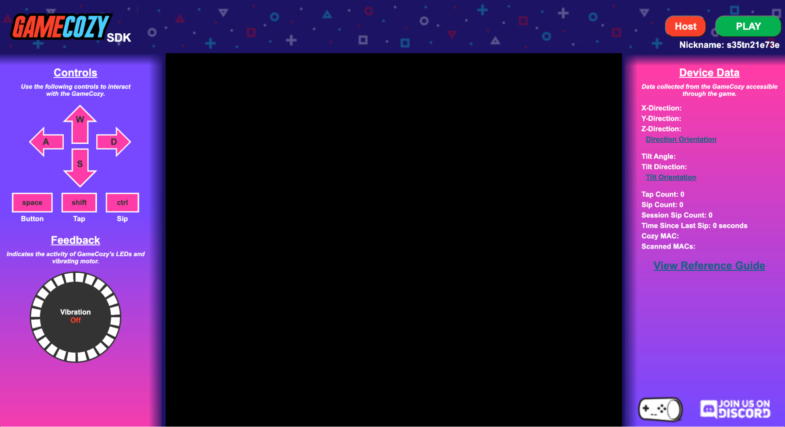
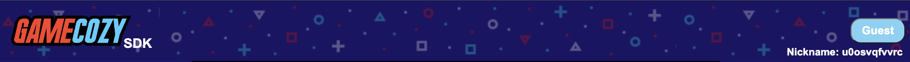
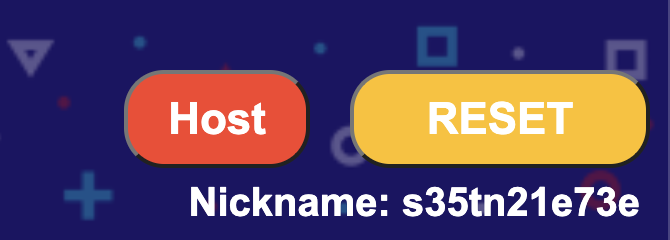
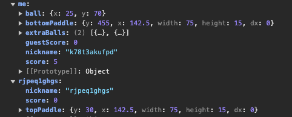
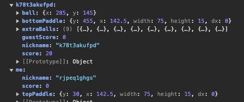

The GameCozy device lets players turn their drink into a gaming controller, allowing game developers to incorporate its controls, data, and feedback into the gaming experience.
Gamers can use the GameCozy to interact with games in the following ways:
The GameCozy web application is a NodeJS platform app that allows users to play WebGL games using the GameCozy device (connected via Web-Bluetooth).
The GameCozy SDK was developed to allow game developers to bring their own games and ideas to the GameCozy platform via a simple and easy-to-use interface. The interface allows the game developer to incorporate GameCozy controls, data, and feedback into their games, allowing for an even more immersive and entertaining gaming experience.
The GameCozy SDK consists of a Header, Left Rail, Gaming Area, and Right Rail.
At the right end of the Header, you will notice a Host Indicator, Play Button, and Nickname Indicator.
The Host Indicator is used to display which player is considered the “Host” of the game and which players are the “Guests” of the game.
In the GameCozy SDK, the “Host” will have the ability to Play and Reset the game. Resetting the game will reset the game window for all connected players. (see Player Communication)
The “Host” can also be utilized as the controller of the data of record for multiplayer games. (see Player Communication)
The Nickname Indicator helps identify different players and can be used for keeping track of scores and data for multiplayer games (see Player Communication). In the GameCozy application, players are able to choose their own Nickname, but in the GameCozy SDK the Nickname is a randomly generated ID that gets updated on every page refresh.
The
Left Rail
displays both
Controls
and
Feedback.
Controls allows the player to map keyboard controls to GameCozy actions.
W - tilt GameCozy forward
A - tilt GameCozy to the left
S - tilt GameCozy backward
D - tilt GameCozy to the right
space - push the GameCozy’s button
shift - tap the GameGozy (note: this is only captured when the GetTap() function is called - see Game Functions)
ctrl - sip from the GameCozy (note: this is only captured when the GetMove() function is called - see Game Functions)
Feedback shows both LED and vibrating motor activity. See Game Functions for details on interacting with the GameCozy’s LEDs and vibrator.
The Gaming Area loads the game found at game/game.html (see SDK File Structure). If multiple players are connected to the server, the same game will load in sync for all connected players (see Player Communication). The “Host” may reset the game for all players (and reload the code) by clicking the Reset button.
The Right Rail displays Device Data and a link to this Reference Guide.
Device Data displays data received from the GameCozy device and/or simulated from the keyboard controls.
X-Direction - X acceleration value
Y-Direction - Y acceleration value
Z-Direction - Z acceleration value
Tilt Angle - tilt angle in degrees
Tilt Direction - tilt direction in degrees
Tap Count - numbers of taps collected after calling the GetTap() function
Sip Count - number of sips taken
Session Sip Count - number of sips taken since booting of the GameCozy (or page refresh in the SDK)
Time Since Last Sip - milliseconds passed since the last sip
Cozy MAC - MAC address of the GameCozy
Scanned MACs - MACs of nearby GameCozies
Several directories can be found within the GameCozy SDK repo.
game – template for SDK game development (see Game Development)
demo – a demo game that can be used for reference (swap with the game directory to see the demo game in action)
sdk – files to facilitate the SDK (must not be modified)
Additionally, app.js is the node app that facilitates the SDK. This is a simplified version of the main GameCozy application that is used to facilitate the starting, ending, and resetting of games as well as communication of game data between players within the SDK.
Only the functions needed for the facilitation of these functions are included in app.js, andit must not be modified, as it is configured to mimic the main GameCozy application.
A basic game template has been created under the game directory. GameCozy supports basic WebGL HTML / JavaScript games, including games created through such game development frameworks as Phaser and Unity.
The game template has been designed to make the porting of games to the GameCozy platform simple and fun. The template contains the following files and folders:
assets –Include both a game logo and game screenshot in this directory when submitting the game. (see Game Configuration)
game.html – This is the main html page for your game. Make sure to include both GameCozyFunc.js and game.js, as well as any additional files you might add.
game.js – This is the main JavaScript file for your game.
The game needs to be wrapped in an async function that awaits initSCGame() to facilitate the starting of the game between multiple players (see Game Functions). Without this, the game will not start for single or multiplayer games.
GameConfig.json –Complete this with information about your game. (see Game Configuration)
GameCozyFuncs.js – This facilitates communication with the server and the GameCozy simulator and must not be modified . (See Game Functions)
Several functions have been developed to facilitate communication between the game and the GameCozy, as well as the game and other players. These functions can be found in GameCozyFunc.js.
initSCGame()
Must be called at the top of the game inside an async function (see Game Progression):
(async()=>{
await initSCGame();
// game goes here
})();
This is used to facilitate the starting of the game between multiple players and a game will not start without it.
finishGCGame(winner=false)
Finish the game and let other players know that the game is finished. Finishing the game will show the MVP Awards screen (see Player Communication)
Parameters:
winner: [Boolean] (whether the player calling the function is the winner)
SetVib(state=true)
Turn the GameCozy vibrator on or off.
Parameters:
state: [Boolean]
options: [true | false]
vibMotPulse(times=0)
Pulse the GameCozy vibrator times times.
Parameters:
times: [integer]
SetLED(position, color, intensity)
Set a specific LED to a color and intensity.
Parameters:
position: [integer]
range: [1 to 24]
color: [hex color code]
ex: 0xff0000
intensity: [integer]
range: [1 to 9]
setLEDs(color, intensity)
Set all LEDs to a color and intensity.
Parameters:
color: [hex color code]
ex: 0xff0000
intensity: [integer]
range: [1 to 9]
setLEDinterval(clr1, clr2, milliseconds, times)
Switch all LEDs between two colors.
Parameters:
clr1: [hex color code]
ex: 0xff0000
clr2: [hex color code]
ex: 0xff0000
milliseconds: [integer]
times: [integer]
sendPlayerData(data)
Send player data to other players. (see Player Communication)
Parameters:
data: [JSON object]
GetTap(duration)
Returns the number of GameCozy taps in a given duration. Taps are stored in the taps variable. Note - taps are only captured when the GetTap() function is called.
Parameters:
duration: [integer] (milliseconds)
GetMove()
Returns coordinates from the GameCozy. Coordinates will not be gathered until this is called. Also begins capturing sips, buttonPress, tilt direction, and tilt angle.
Coordinates are stored in the coords variable (array).
Sips are stored in the sips variable (integer).
Button press is stored in the btnPress variable (Boolean).
Tilt direction is stored in the tiltDirection variable (float).
Tilt angle is stored in the tiltAngle variable (float).
StopMove()
Stops getting coordinates from the GameCozy and resets coordinates to [0,0,0]. Also stops capturing sips, tilt direction, and tilt angle and resets values to 0.
GetTimeSinceLastDrink()
Returns seconds since the last sip was taken. Stored in the timeSinceLastDrink variable (integer).
GetSessionSips()
Returns the total number of sips since the GameCozy was powered on (or the SDK page was refreshed). Stored in the sessionSips variable (integer).
GetMAC(threshold_RSSI, duration)
Returns the MAC addresses of other GameCozies within a threshold_RSSI proximity after a given duration.
Parameters:
threshold_RSSI: [negative integer]
duration: [integer] (seconds)
A game is started by pressing the Play button in the SDK header (see SDK Layout). The game must incorporate the await initGCGame() function (see Game Functions) inside a main async function in order to begin playing.
A game is ended by calling the finishGCGame() function (see Game Functions). At this point, the game will end for all players and the MVP Awards screen will be displayed.
After each game, the MVP awards are displayed. This indicates whether the current player is the winner or the loser, and displays game data for each player, determined by the RankBy and RankOrder data stored in GameConfig.json and the window.gameData variable (see Game Configuration and Player Communication).
The GameCozy SDK was designed to allow for quick communication between multiple players in a game. Every browser window connected to the application will be considered a different “player” in the game. The first player to join is considered the “Host” and the remaining players are considered “Guests”. The “Host” is able to Start and Reset the game for all players (see SDK Layout). If the “Host” is disconnected from the application, the next oldest player will become the “Host”.
Player Communication is facilitated through the SendPlayerData() function that allows the game developer to send a JSON object that will be broadcast to all the players in the game. This could include such information as score or coordinates of objects in the game.
When game data is received by a player, it will be stored as a hash object in the window.gameData variable. Data from the current player will be stored under a “me” key in the hash, while data from other players will be stored under a key that corresponds to the user’s nickname (see SDK Layout). Additionally, the player’s nickname will be sent as an additional key in the data hash that can be displayed in the game and also used for the MVP Awards screen at the end of a game (see MVP Awards).
For example, the window.gameData variable in the demo game for the “Host” might look something like this at a moment in time -
While data for the “Guest” in the same demo game might look something like this -
It is up to the game developer to decide what information to send and how to process that information. (see Demo Walkthrough for more information)
Either player may call the finishGCGame() function to end the game and show both players the MVP Awards screen (see Game Progression).
The demo game included in the SDK is a basic two-player Pong game adapted from https://gist.github.com/straker/81b59eecf70da93af396f963596dfdc5 . It was created to demonstrate the GameCozy game flow and various GameCozy functions that can be included in a game.
To see the demo game in action, swap the demo directory with the game directory. (see SDK File Structure)
The game is initiated by calling await initGCGame() inside an async function.
The “Host” controls the bottom paddle with the GameCozy and the “Guest” controls the top paddle in the same manner. Once the GetMove() function is called, the coords variable is accessed to accomplish this.
If the “Host” presses the GameCozy button, a new yellow distraction ball will be added to the gaming area. Once the GetMove() function is called, the btnPress variable is accessed to accomplish this.
If the “Host” taps the GameCozy, the ball speed of the main ball will increase. The GetTap() function is called and the taps variable is accessed to accomplish this.
If the “Host” takes a sip from the GameCozy, the distraction balls and main ball speed will be reset. Once the GetMove() function is called, the sips variable is used to accomplish this.
The “Host” utilizes the SendPlayerData() function to update the “Guest” on the location of the main ball, bottom paddle, extra balls, and score. The “Guest” utilizes the SendPlayerData() function to update the “Host” on the location of the top paddle and player’s score.
The window.checkGameData() function created within the game checks the window.gameData variable, looks for the key of the other player, and updates the game view and data accordingly.
The demo game is finished when either player calls the finishGCGame() function and indicates whether that player is the winner or loser. The game then progresses to the MVP Awards screen. (see Game Progression)
The GameConfig.json file has been created to collect and store information about the game and game developer. This information will be used for displaying game information and filtering games within the GameCozy application. Upon submission, populate the JSON object with the following fields:
Creator: [string]
limit: 40
GameTitle: [string]
limit: 40
GameGenre: [string]
options: [“Action” | “Adventure” | “Sports” | “Racing” | “Shooting” | “Puzzle” | “Cards” | “Ambient” | “Multiplayer” | “Arcade” | “Other”]
GameSize: [integer]
range: [1 to 36]
PlayerType: [string]
options: [“single” | “multiplayer”]
GameLogo: [string] (path to logo in assets directory)
GameScreenShot: [string] (path to screenshot in assets directory)
GameDescription: [string]
limit: 200
Game Instructions: [text]
limit: 1400
RankBy: [string] (key from sendPlayerData()) (see Player Communication)
RankOrder: [string]
options: [“asc” | “desc”] (see Player Communication)
After reading through the documentation, reference the following as a summary for what to include in a game. Make sure that, minimally, the following elements are in place for basic game functionality.
To submit your game to be included in the official GameCozy application, zip the full game directory and email it to games@gamecozy.co. In addition to a fully functioning game, ensure that the directory contains the following information:
We value your submissions and collaboration! This repo will be actively maintained and monitored as GameCozy development continues. Subscribe to the repo to be notified of updates.
Please contact
games@gamecozy.co
if you have any questions or run into any issues.